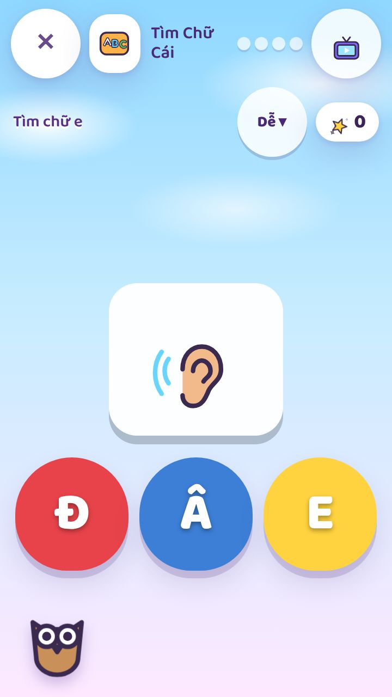
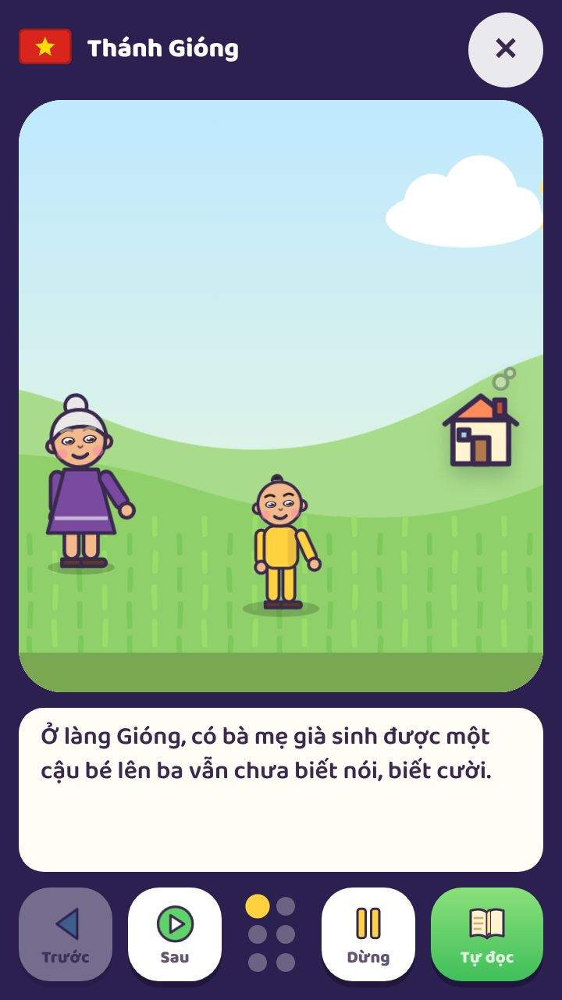
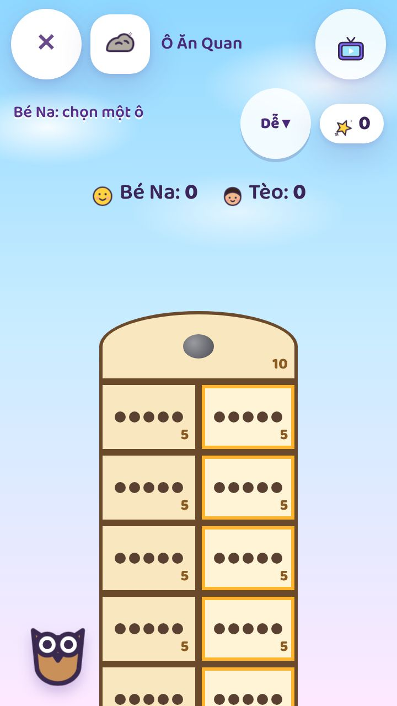
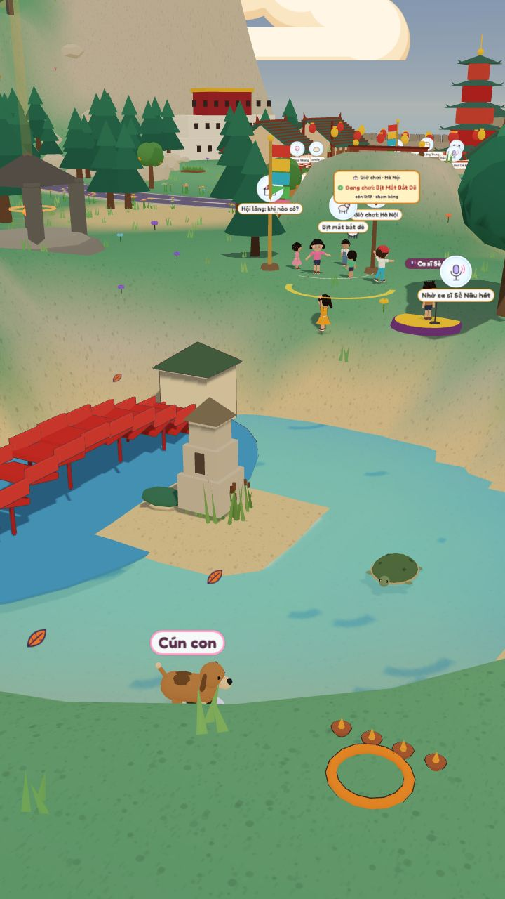

Thung Lũng Lấp LánhSparkle Valley
Trò chơi song ngữ cho bé 2 đến 8 tuổi · A bilingual game for children aged 2 to 8




Bé học mà chơi
- Tiếng Việt và tiếng Anh, chữ nào cũng đọc thành tiếng
- Tập tô chữ, đọc chữ, đếm số, tiêu tiền đô và tiền đồng
- Truyện cổ tích kể thành tiếng: Thánh Gióng và nhiều truyện khác
- Ô ăn quan, thả diều, Tết và Trung Thu đúng mùa
- Hà Nội, Hội An và Sydney trong một thung lũng
- Bé dưới 5 tuổi có màn hình "Hình to", không bao giờ thua
Learning through play
- Vietnamese and English, every word read aloud
- Tracing letters, first words, counting, dollars and đồng
- Fairy tales read aloud: Thánh Gióng and more
- Ô ăn quan, kite flying, Tết and Trung Thu in season
- Hà Nội, Hội An and Sydney in one valley
- A "Big pictures" screen for under-fives, who never lose
Miễn phí · Không quảng cáo · Không cần tài khoản · Chơi được khi không có mạng
Free · No ads · No accounts · Plays offline
sparklevalley.au
Mở trên điện thoại hoặc máy tính bảng, bấm "Thêm vào màn hình chính".
Open it on a phone or tablet and tap "Add to Home Screen".